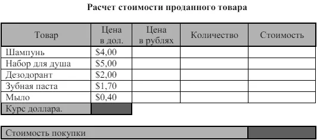
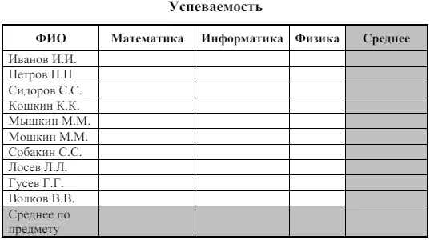

Задание для обучения MS Excel №4
Тема: Построение диаграмм и графиков
Цель:получить практические навыки работы в программе Ms Excel
Научиться строить, форматировать и редактировать диаграммы и графики.
Ход работы:
Задание № 1
- Открыть файл Практическая работа 2, лист Функция
- Построить график функции по данным таблицы.
- Сохранить сделанные изменения.
Задание № 2
- Открыть новую рабочую книгу.
- Ввести информацию в таблицу по образцу.
- Выполнить соответствующие вычисления (использовать абсолютную ссылку для курса доллара).
- Отформатировать таблицу.
- Построить сравнительную круговую диаграмму цен на товары и диаграмму любого другого типа по количеству проданного товара.
- Диаграммы красиво оформить, сделать заголовки и подписи к данным
- Лист1 переименовать в Стоимость. Сохранить в файле Практическая работа 4

Задание № 3
1. Перейти на Лист2. Переименовать его в Успеваемость
2. Ввести информацию в таблицу.

3.Вычислить средние значения по успеваемости каждого ученика и по предметам.
4.Построить гистограмму по успеваемости по предметам
5.Построить пирамидальную диаграмму по средней успеваемости каждого ученика
6.Построить круговую диаграмму по средней успеваемости по предметам. Добавить в этой диаграмму процентные доли в подписи данных
7.Красиво оформить все диаграммы.